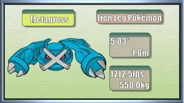

| Pokémon of the Week - May 7th 2017 | ||||
|---|---|---|---|---|
|  | ||||
| Overview | Metagross is one of those Pokemon that has lost its luster not so much because it has received a ton of nerfs throughout the years (and it has), but more because the world around it seems to move so much faster than it did in the old days. Metagross started out its first two generations as a top notch physical attacker with its high Attack stat, solid power behind its STAB Meteor Mash, cool typing, good bulk for an offensive Pokemon, and pretty impressive offensive movepool. Not to mention it had one of the most powerful Explosions in the game, letting it punch huge holes in teams that might be otherwise quite prepared for it. After DPPt, however, everything started going downhill. BW brought the Explosion nerf that took away one of Metagross's biggest weapons, and the increasing power level of the metagame around it meant that Metagross's natural strength and bulk were looking less impressive than ever. | |||
| Positives |
+ Base 135 Attack may not top the charts like it used to, but it's still quite powerful, and it's complimented by base 95 Special Attack stat too. + Metagross is more than capable of taking a hit thanks to its (80/130/90) bulk. + Metagross has a pretty impressive movepool with plenty of STAB option, tons of physical and special coverage moves, and a host of utility moves. + Despite the Steel nerf, Steel / Psychic typing still offers plenty of perks with a whopping total of 9 resistances and immunity to Poison. + It's apparently smarter than a supercomputer, which means it'd probably be the best competitive Pokemon player in the world if it could play. |
|||
| Negatives |
- Metagross's low base 70 Speed stat is easily its biggest downfall. It's not hard to find something that can outspeed Metagross and deal significant damage to it. - While it offers some nice perks, Steel / Psychic typing also leaves Metagross with 4 weaknesses, all to pretty common attacking types. - Mega Metagross does most of what regular Metagross does 100% better. It's really hard to justify using regular Metagross. |
|||
| Counters | Unless it happens to be carrying Thunder Punch, bulky Water-types such as Slowbro and Alomomola can take Metagross on pretty nicely. Rotom-W also does well, provided it doesn't get Tricked an Iron Ball or something. Skarmory will eventually lose to Hammer Arm variants unless it carries Counter, in which case it can win the matchup. As far as other Steel-types go, Ferrothorn is a pretty solid stop to sets carrying Earthquake over Hammer Arm, while Mega Scizor has the typing and bulk to take just about anything Metagross can throw at it with ease. Aegislash can take it on nicely as well, provided it's not running Earthquake. Hippowdon with maximum Defense investment can switch into Metagross's attacks, heal off damage with Slack Off, and threaten back with Earthquake. Physically defensive Mandibuzz can escape a 2HKO from basically anything but a Choice Band Ice Punch and use Metagross's own Attack stat against it with Foul Play. Metagross's mediocre speed and four common weaknesses (an unfortunate side effect of its Steel / Psychic typing) prevent it from being too hard to check offensively. | |||
| Click here for Further Information on Mamoswine | ||||